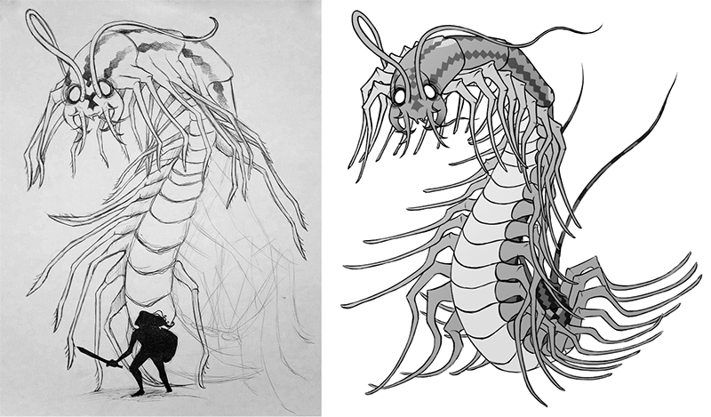
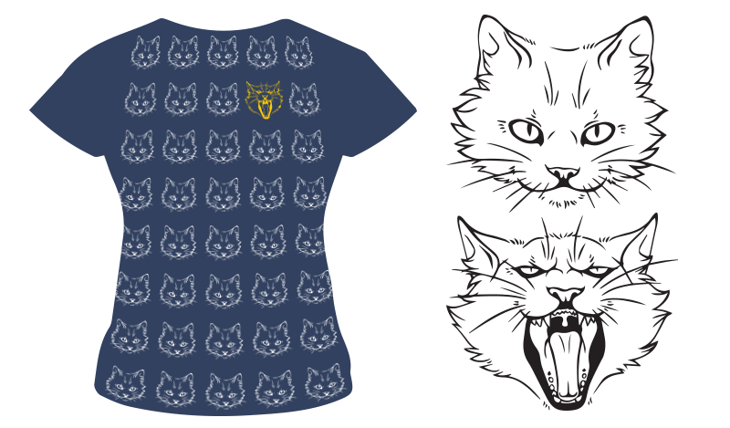

The New Yorker, a magazine started in 1925, has decided to change the overall design of their magazine. The magazine isn’t making any dramatic changes, but simply wishes to refresh their look by incorporating small details into their current issues that they have used in the past, as well as editing the format to better suit all of the aspects of the magazine.The format of The New Yorker has hardly changed since it’s first publication date, and the magazine is praised for its bravery in the matter of focusing on keeping its issues as consistent as possible. Rea Irvin is responsible for the original look of The New Yorker, creating his own typeface, which has now been cleaned up and refurbished by typographers for further use in future issues. The design team claims that their edits to the magazine’s overall design will be slight, but that some longtime readers may offer negative feedback for the issue’s changes. David Remick says, “If the magazine fell on the floor and were three feet away, it would still be identifiable to longtime readers.” The magazine will have a cleaner and more polished version of the Irvin typeface, as well as illustrations and layouts that will help to incorporate photography more fluidly.
Additionally, there is a new typeface being added to The New Yorker’s new layout called Neutraface — a typeface created by Christian Schwartz, based off of the work by modernist architect, Richard Neutra. Schwartz uses the style that Neutra uses in his architectural pieces to inspire him with his typeface. He creates bases from Neutra’s work, and fills in the rest of the lettering with whatever he pleases. Some readers and designers are afraid that the type is not “New Yorker” enough for the magazine; Wyatt Mitchell, the creative director, responds to this with, “Because the brand is still so strongly rooted in the Art Deco tradition, Neutraface — a modern spin on a deco theme — offers us a new type-style that doesn’t feel misplaced or far-removed from our graphic tradition.”
The New Yorker uses something that designers call “slow design.” The company doesn’t change much about their magazine with every update, but as the years progress, there is clearly a significant enough difference to notice. However, the design doesn’t stray away from the original by much, and can be easily recognized by old and new readers. The New Yorker claims that this is a revolutionary change for the magazine, since they are bringing in older elements, and adding some new ones to modernize the look and feel of each article. I think it’s endearing that though these changes are so small and slight, that the company is treating them with such care and tenderness. However, I am shocked that the magazine has changed so little over the decades. Michael Bierut in his article In Praise of Slow Design commented, “Publication design is a field addicted to ceaseless reinvention,” which is a statement I have found to be true with a lot of designers’ work I see, whether it be the work of a professional company completely changing their marketing strategies and design work, or the designers around me at school, who are constantly changing their work in the blink of an eye.
What I find to be impressive is the level of motivation and discipline these designers have to stay as true to The New Yorker’s intent and audience as possible, but still refurbish the designs enough so that the magazine is still relevant. “The New Yorker will be a reflection in word and picture of metropolitan life,” says Harold Ross, as stated in Bierut’s article. I do believe that the magazine has stayed true to this statement over the years, keeping itself interesting and simple and relevant to the time period that it has become a part of.